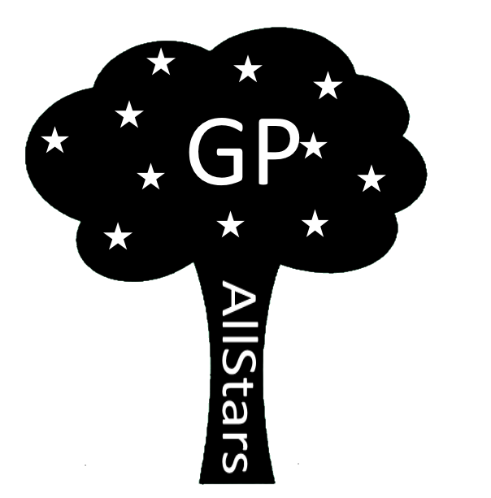

GP All-stars
Racerstjernen Kevin Magnussen i problemer
Den danske formel 1 stjerne Kevin Magnussen må kæmpe om sit sæde mod hans team kammeret Joylan Palmer. Kevin har vist en masse gode resultater i forhold til team kammeraten Joylan Palmer, men Kevin har stadig problemer.
Andreas.elle.skov@hotmail.com
Frederikrimaas@gmail.com
Kevin Magnussen risikerer at miste sit sæde hos Renault til sin team kammeret Palmer. Kevin har vist gode resultater i år, men han stadig ikke sikker på et sæde næste år. Renault har været i kontakt med Button, Perez og Bottas, som kunne være deres næste F1 kørere til den kommende sæson.
Mexicanske Grandprix
Kevin lavede en god kvalifikation og låg nr. 14 da løbet startede, men det blev desværre ikke til en pointplacering. Magnussen kunne desværre ikke få gang i dækkene, og skulle hele tiden i pit. Palmer havde dog ikke nogen problemer med dækkene, og gik fra en 21. plads til en 13. plads.
Nyt Team
Kevin Magnussen har være i kontakt med et nyt team. Teamet hedder Haas, og det siges at Haas har tilbudt ham 2 årig kontrakt. Hvis Kevin accepterer tilbuddet, for han mulighed for at få flere point end i denne sæson. Kevin kan også få muligheden, for at blive holdets førstekører og dermed en masse penge.
Sponsorerne står allerede klar med en masse penge.